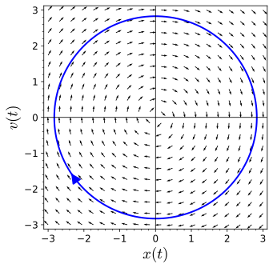
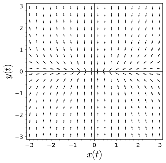
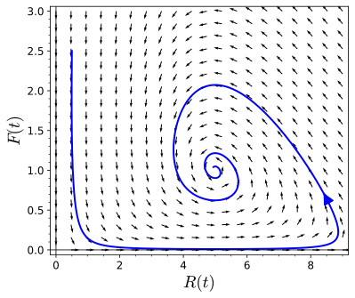
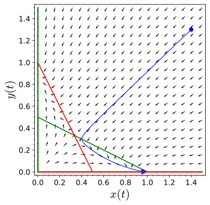
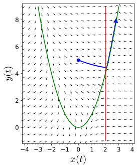

Equation (2.2.1) tells us how a solution curve changes in the \(x\) direction, while equation (2.2.2) tells us how a solution curve changes in the \(y\) direction.
The direction field is relatively easy to understand. After plotting only few vectors, we can very quickly see that the vectors are tangent to circles centered at the origin (Figure 2.2.2). Since the solutions to the undamped harmonic oscillator \(x'' + x = 0\) are of the form
\begin{equation*}
x(t) = A \cos t + B \sin t
\end{equation*}
for arbitrary constants \(A\) and \(B\text{,}\) this should not be too surprising.

Figure2.2.2.The direction field for a harmonic oscillator
Let us examine some systems of equations with direction fields that are easily plotted.
also gives us a direction field where the vectors point towards the origin; however, we shall soon see that there are important differences between this direction field and the direction field of the previous system (Figure 2.2.5).

Figure2.2.6.The direction field for \(x' = -x\) and \(y' = -5y\)
Activity2.2.1.Plotting Direction Fields.
Plot direction fields for each of the following systems of differential equations in the \(xy\)-plane.
\begin{align*}
x' & = x + y\\
y' & = x - y
\end{align*}
Subsection2.2.2Modified Predator-Prey System
Let us recall the modified predator-prey system that we developed in the last section. That is, we will assume that the prey in our model has logistic growth,
where \(N\) is the carrying capacity. In order to investigate the geometric properties of our system, we will rewrite our system in vector form. For each value of \(t\text{,}\) we will use \({\mathbf x}(t)\) to denote the vector-valued function
This vector-valued function, \(\mathbf x(t)\) corresponds to our solution curve \((R(t), F(t))\) in the \(RF\)-plane. Now we can write our predator-prey model as a single vector equation,
We can associate a vector in the \(RF\)-plane for each value of \(R\) and \(F\text{.}\) For example, if we let \((R, F) = (10, 10)\text{,}\) we have \((R', F') = (-100, 50)\text{.}\) At this particular point, the population of rabbits is falling rapidly while the number of foxes is climbing very quickly, We can represent this vector in the phase plane by drawing an arrow in the proper direction. Thus, we obtain a direction field for our system of differential equations (Figure 2.2.7).

Figure2.2.7.A vector field for the predator-prey system
Subsection2.2.3A Competing Species Model
Suppose that \(x\) and \(y\) are the population of two distinct species that compete for the same resources. For example, two species of fish may compete for the same food in a lake, leopards and lions may compete for the same prey, or cattle and sheep may compete for the same grazing land. We can model two competing species using the following system of first-order differential equations,
The first term in each equation is the logistic growth of each species. The second term is how the species is affected by interacting with the competing species.
Suppose that \(x = x(t)\) and \(y = y(t)\) are two populations, competing for the same resources, are governed by the following system of differential equations,
then the values of \(x\) and \(y\) satisfying \(dx/dt = f(x, y) = 0\) are called the \(x\)-nullclines of the system and the values of \(x\) and \(y\) satisfying the equation \(dy/dt = g(x, y) = 0\) are called the \(y\)-nullclines of the system.

Figure2.2.9.Nullclines for the case \(\beta = 2\)
In our example, we can plot the \(x\) and \(y\)-nullclines to help us understand our system (Figure 2.2.9). Of course, we have an equilibrium solution whenever an \(x\)-nullcline intersects with a \(y\)-nullcline. Thus, the equilibrium points for our particular system are \((0,0)\text{,}\)\((1, 0)\text{,}\)\((0, 1)\text{,}\) and \((1/3, 1/3)\text{.}\) Furthermore, we can choose a representative point in each region to find how the direction field is oriented. If we are given the initial condition \((1.4, 1.3)\) for example, we can see that
Since both of these numbers are negative, we can see that our initial trajectory is headed down and to the left—slightly more to the left than down. However, we have no guarantee that the trajectory will continue in this direction.
Before we proceed further with our analysis, let us determine what happens on the nullclines themselves. That is, we will examine the case when \(dx/dt = 0\) or \(dy/dt = 0\text{.}\) If \(dx/dt = 0\text{,}\) then any solution crossing this \(x\)-nullcline must be moving vertically. There can be no right or left movement at this point in the phase portrait. We can indicate this fact along with the direction of vertical movement by drawing a vertical slash with an arrow on the \(x\)-nullcline (Figure 2.2.9). For example, the point \((0.5, 0.25)\) lies on the \(x\)-nullcline and
Therefore, the trajectory that crosses the \(R\)-nullcline at \((0.5, 0.25)\) is moving down. As we move along the \(x\)-nullcline, the direction of this arrow can only change when we cross an \(y\)-nullcline.
Similarly, there can be no vertical motion on an \(y\)-nullcline. We will indicate the direction of horizontal motion by drawing a horizontal line with an arrow pointing to the right if \(dx/dt \gt 0\) on the \(y\)-nullcline and an arrow pointing to the left if \(dx/dt \lt 0\) on the \(y\)-nullcline.
We can also determine the basic direction of the solution curve by checking what happens at a point in each of the regions bounded by the nullclines. For example, at the point \((0.1, 0.1)\) we find that
Thus, the general direction of any solution curve in this region is up and right (Figure 2.2.9).
What happens to the initial condition \((1.4, 1.3)\text{?}\) We see three possible scenarios if we follow the nullclines for large values of \(t\text{.}\)
Only species \(x\) survives and species \(y\) becomes extinct.
Only species \(y\) survives and species \(x\) becomes extinct.
There are essentially equal numbers of species \(x\) and \(y\text{.}\)
Activity2.2.2.Plotting Direction Fields with Nullclines.
where the species interact weakly, say \(\beta = 1/2\text{.}\)
(a)
Find the \(x\) and \(y\)-nullclines for this system.
(b)
Find all equilibrium points for this system.
(c)
The nullclines will divide the first quadrant of the plane, \(x \geq 0\) and \(y \geq 0\text{,}\) into different regions. In each of these regions find a slope vector at some point \((x_0, y_0)\) in the region. For example, at the point \((1,2)\text{,}\) we can attach slope vector \((-1, -3)\text{.}\)
(d)
Sketch the phase plane for this system.
(e)
If the initial populations are given by \(x(0) = 2.4\) and \(y(0) = 0.3\text{,}\) what happens to the two populations as \(t \to \infty\text{?}\)
There is no reason why our nullclines should be limited to straight lines. The system
\begin{align*}
x' & = y - x^2\\
y' & = x - 2
\end{align*}
has an \(x\)-nullcline \(y = x^2\) and a \(y\)-nullcline \(x = 2\text{.}\) These two nullclines intersect at \((2, 4)\text{,}\) and the system has a single equilibrium solution. The nullclines divide the plane into four basic regions (Figure 2.2.11). By choosing a point in each of these regions and determining the direction of the slope field at that point, we can decide the direction of the slope field in the entire region.

Figure2.2.11.The system \(x' = y - x^2\) and \(y' = x - 2\)
The only equilibrium solution of our system occurs at \((2, 4)\text{.}\)
Subsection2.2.4Plotting Direction Fields with Sage
It is easy to plot direction fields using Sage. We can plot the direction field for the system
\begin{align*}
x' & = y - 2x,\\
y' & = x - xy - x^3
\end{align*}
using the following Sage interact. You can evaluate the cell below to get a menu driven applet for drawing direction fields for systems of two differential equations.
Figure2.2.12.A Sage applet for plotting direction fields for systems
Subsection2.2.5A Summary of Phase Plane Analysis
We can use the following series of steps to summarize phase plane analysis for the nonlinear system
Step 1. Draw the curves where \(f(x, y) = 0\text{.}\) These curves are called the \(x\)-nullclines. When a solution curve \({\mathbf x}(t)\) lies on one of these curves, \(dx/dt = 0\text{,}\) draw vertical slash marks on the \(x\)-nullclines to remind yourself that a trajectory crossing the nullcline can only do so if it is moving in a vertical direction at the instant of crossing.
Step 2. Draw the curves where \(g(x, y) = 0\text{.}\) These curves are called the \(y\)-nullclines. When \({\mathbf x}(t)\) lies on one of these curves, \(dg/dt = 0\text{.}\) Draw horizontal slash marks on the \(y\)-nullclines to remind yourself that a trajectory crossing the nullcline can only do so if it is moving in a horizontal direction at the instant of crossing.
Step 3. Label the points where the \(x\) and \(y\)-nullclines intersect. These intersections are the equilibrium points. If \({\mathbf x}(t)\) is ever at one of these points, then both \(dx/dt\) and \(dy/dt\) vanish. This means that the trajectory stays at the equilibrium point for all time. If our system is going to tend towards a steady state, then \({\mathbf x}(t)\) will approach on of the equilibrium points as \(t \to \infty\text{.}\)
Step 4. Label the regions of the \(xy\)-plane where \(dx/dt \lt 0\) and where \(dx/dt \gt 0\text{.}\) These regions are always separated by \(x\)-nullclines. Likewise, label the regions where \(dy/dt\) is positive and negative.
Step 5.Go back and put arrows on the vertical hash marks of the \(x\) nullclines. These arrows indicate whether the motion across the nullcline is up or down. The arrows are up on the parts of the \(x\)-nullclines that are in the \(dy/dt \gt 0\) region, and down on those parts of the \(x\)-nullclines in the \(dy/dt \lt 0\) regions. Likewise, draw arrows on the horizontal slash marks of the \(y\)-nullclines. These arrows are pointing right on the parts of the \(y\)-nullclines in the \(dx/dt \gt 0\) regions and left point on the parts in the \(dx/dt \lt 0\) regions.
Step 6.
If \(dx/dt \gt 0\) and \(dy/dt \gt 0\text{,}\) then both \(x(t)\) and \(y(t)\) are increasing and the trajectory moves up and right.
If \(dx/dt \gt 0\) and \(dy/dt \lt 0\text{,}\) the trajectory moves down and right.
If \(dx/dt \lt 0\) and \(dy/dt \gt 0\text{,}\) the trajectory moves up and left.
If \(dx/dt \lt 0\) and \(dy/dt \lt 0\text{,}\) the trajectory moves down and left.
Consider an epidemic that moves through an isolated population. We will make the following assumptions about the epidemic.
Individuals are infected at a rate proportional to the product of the number of infected and susceptible individuals. We assume that the constant of proportionality is \(\alpha\text{.}\)
The length of the incubation period is negligible, and infectious individuals are immediately infectious.
On the average, an infected individual dies after 10 days.
Only a single individual is initially ill.
Infected individuals do not give birth, but susceptible individuals have a birth rate of 0.0003 per individual per year. Newborns are susceptible.
If \(S(t)\) is the number of susceptible and \(I(t)\) is the number of infected people, then
\begin{align}
\frac{dS}{dt} & = -\alpha SI + 0.0003S\tag{2.2.7}\\
\frac{dI}{dt} & = \alpha SI - 0.1I.\tag{2.2.8}
\end{align}
The constant \(\alpha\) is a measure of the relative infectivity of the disease. Some diseases such as Ebola, a viral hemorrhagic fever, are extremely infectious with a mortaility rate of up to 90%. On the other hand, AIDS which is caused by the HIV virus, has a much lower transmission rate. The goal of this exercise is to examine the differences between the two.
If \(\alpha = 0.05\text{,}\) draw the phase portrait. Be sure to label all nullclines and equilibrium solutions. Suppose that \(S(0) = 1000\) and \(I(0) = 1\text{.}\) What happens to the solution curve as \(t \to \infty\text{?}\)
If \(\alpha = 0.000001\text{,}\) draw the phase portrait. Be sure to label all nullclines and equilibrium solutions. Suppose that \(S(0) = 30000\) and \(I(0) = 1\text{.}\) What happens to the solution curve as \(t \to \infty\text{?}\)
What conclusions can you draw about the behavior of the two different epidemics?
Subsection2.2.9Plotting Nullclines with Sage
Let us use Sage to analyze the system
\begin{align*}
x' & = x + y,\\
y' & = -2x + y.
\end{align*}
First let us plot the phase plane of the system without nullclines.
If these Sage commands seem unfamiliar, you may want to refer to Subsection 2.1.7
We can add nullclines to our plot using the implicit_plot function from Sage.
The \(x\)-nullclines are plotted in green and the \(y\)-nullclines are in red.